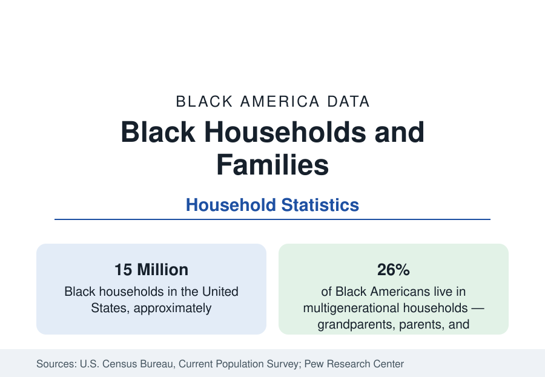

Black Census
Black Households and Family Structure in the Census Data
About 15 million Black households: how they are composed — married couples, single householders, multigenerational homes — and how the data have changed.

The household is the unit at which most census statistics are actually collected, and Black household structure — about 15 million households in the Current Population Survey — differs from the national pattern in ways that drive many of this reference's other figures, from the income median to the poverty rate. This article reports the composition data: how Black households divide among married couples, single householders, and extended arrangements; how large they are; and how the structure has changed across two generations of data.
The Composition in Outline
Roughly six in ten Black households are family households — two or more related people — and four in ten are nonfamily households, most of them a person living alone, a higher solo share than the national figure. Within Black family households, married couples make up just under half; families maintained by a woman with no spouse present make up more than two in five — the largest such share of any major group — and families maintained by a man with no spouse present make up most of the remainder. Each of these categories carries distinct income and poverty profiles, documented in their own articles in this section, and the aggregate statistics of Black economic life cannot be understood without the mix: a population in which single-adult families are common will record lower household income and higher child poverty than a population of identical earners organized differently.
Marriage in the Data
The Current Population Survey's marital series records that Black adults marry at lower rates and later ages than the national pattern: a smaller share of Black adults are currently married — roughly three in ten against roughly half of all adults — and the shares who have never married are correspondingly higher, at every age including middle age. The trend lines move in the same direction for all groups — marriage has declined nationally for half a century — but from different starting points and at different speeds, so the gaps have widened across the period. The causes documented in the research literature include the employment and earnings differentials of this reference, the sex ratios of local populations, educational pairing patterns, and shifting norms across all groups; the statistics themselves, which are this reference's province, describe the outcome rather than adjudicate among explanations.
Children's Living Arrangements
The children's data complete the structure. About half of Black children live with two parents — counting married and cohabiting arrangements together puts the figure somewhat above half — while roughly two in five live with their mother only, a small share with their father only, and a meaningful share, higher than for any other group, live with grandparents or other relatives as the primary householders. These arrangements correlate strongly in the data with household income, poverty status, and housing arrangements, and they are the reason the poverty article in this section reports child poverty separately: the Black child poverty rate of more than one in four is substantially a reflection of the income arithmetic of single-adult households.
The Extended and Multigenerational Household
Against the decline-of-the-family reading that household statistics often receive, the same data record a countervailing Black institutional strength: extension. About 26 percent of Black Americans live in multigenerational households — grandparents, adult children, and grandchildren under one roof — against about 18 percent of all Americans, in the Pew Research Center's multigenerational studies, and Black households are more likely to include extended kin beyond the nuclear family: adult siblings, cousins, and fictive kin in the arrangements Black sociology has documented for a century. These households pool income, childcare, and elder care, and their measured economics — higher total household income, lower per-person income — are a standing caution in reading the income data. The multigenerational share rose for all groups across the 2010s and the pandemic period; the Black share remains the benchmark against which the national rise is measured.
Change Across Two Generations
Set against the data of the 1970s, today's structure shows three great movements: the married-couple share of Black families down from roughly two-thirds to under half; the solo-living share up, as it is nationally; and multigenerational living up from its late-twentieth-century low. The composite effect on headline statistics is mechanical and large — demographers have shown that household structure change alone accounts for a substantial fraction of the movement in Black household income and poverty figures across the period, independent of what happened to any individual family's earnings. It is why this reference always pairs a change in an economic headline with the household composition beneath it.
Summarized, the household data describe 15 million households organized more variously than the national template: fewer married-couple households, more single-adult and solo households, and more extended and multigenerational arrangements than any other major group — a structure that is simultaneously the arithmetic beneath Black America's economic gaps and the record of its oldest adaptive institution, the extended family.
More in Black Census
The Black Population of the United States: Size, Definitions, and Distribution
The Black population of the United States totals 52.8 million — 15.4 percent of the nation. How the Census Bureau defines and counts the population, and where it lives.
Black Median Household Income in the United States
Black median household income stands at $56,490 in the Census Bureau's annual income report — how the figure is measured, how it compares, and what drives it.
The Black Poverty Rate: Levels, Children, and the Long Trend
The official Black poverty rate is 17.1 percent — against 11.1 percent nationally and 7.7 percent for non-Hispanic White Americans. How poverty is measured and what the data show.
Source: U.S. Census Bureau, Current Population Survey, America's Families and Living Arrangements; American Community Survey; Pew Research Center.